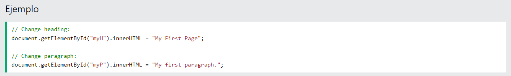

Los comentarios de JavaScript se pueden usar para explicar el código de JavaScript y hacerlo más legible. Los comentarios de JavaScript también se pueden usar para evitar la ejecución, al probar código alternativo.
Los comentarios de una sola línea comienzan con //. Cualquier texto entre //y el final de la línea será ignorado por JavaScript (no se ejecutará). Este ejemplo usa un comentario de una sola línea antes de cada línea de código:
 Los comentarios de varias líneas comienzan con /*y terminan con */.
Cualquier texto entre /*y */será ignorado por JavaScript.
Este ejemplo utiliza un comentario de varias líneas (un bloque de comentarios) para explicar el código: